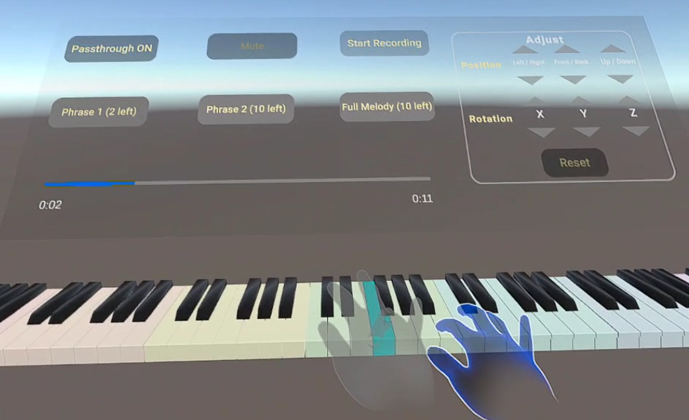
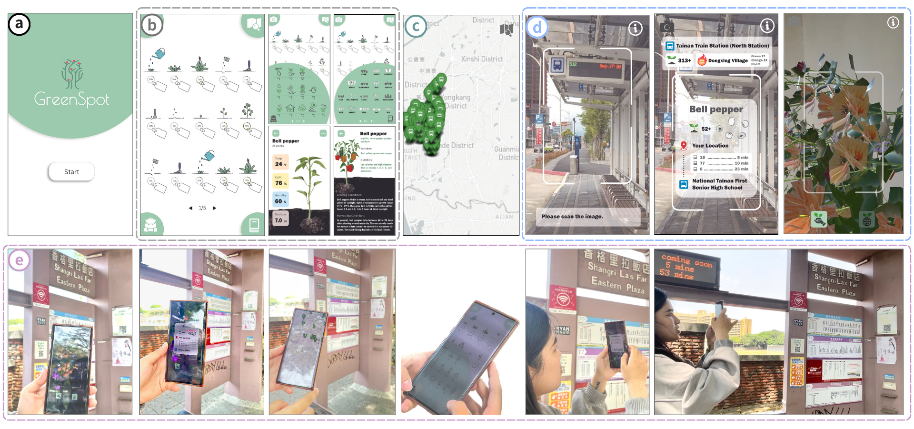
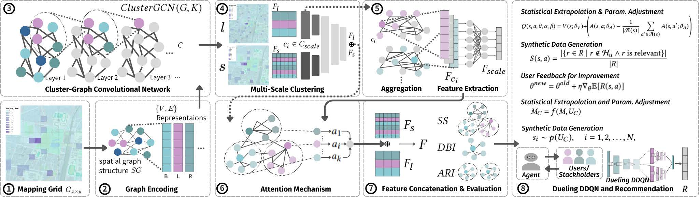
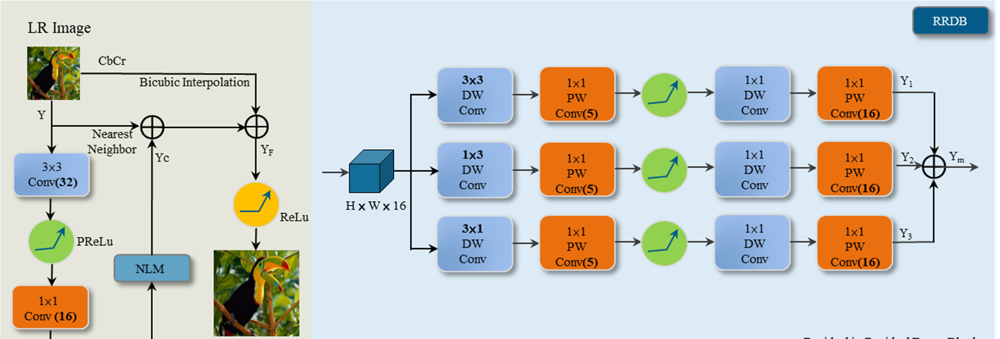

Publications

Skill-Adaptive Ghost Instructors: Enhancing Retention and Reducing Over-Reliance in VR Piano Learning
Designed and evaluated a VR piano learning system with adaptive ghost-hand guidance. Compared static vs. skill-adaptive conditions through a user study measuring retention, over-reliance, and workload.

UrbanSight: Application of Digital Twin to Augmented Reality
Built a collaborative multi-user MR environment where users interact with a shared digital twin in real time, integrating BIM and 3D spatial data via HoloLens 2.

M3: Recommendation via Attention-Graph Cluster Q-Learning with Multi-Scale Spatial Heterogeneity for Green Attractions
Proposed a multi-stakeholder recommendation system leveraging attention-graph Q-learning with multi-scale spatial heterogeneity for transportation and green attraction planning.

GreenSpot: Improving Public Transport with GIS-Based AR and Cluster-GCN Recommendation

TMSR: Tiny Multi-path CNNs for Super Resolution
Proposed a lightweight multi-path CNN architecture for image super-resolution optimized for efficiency under hardware constraints.

Enhancing Urban Crowd Monitoring through Predictive Modelling System with Diverse Geospatial Datasets
Developed a predictive modeling system for urban pedestrian flow monitoring integrating diverse geospatial datasets for smart city applications.